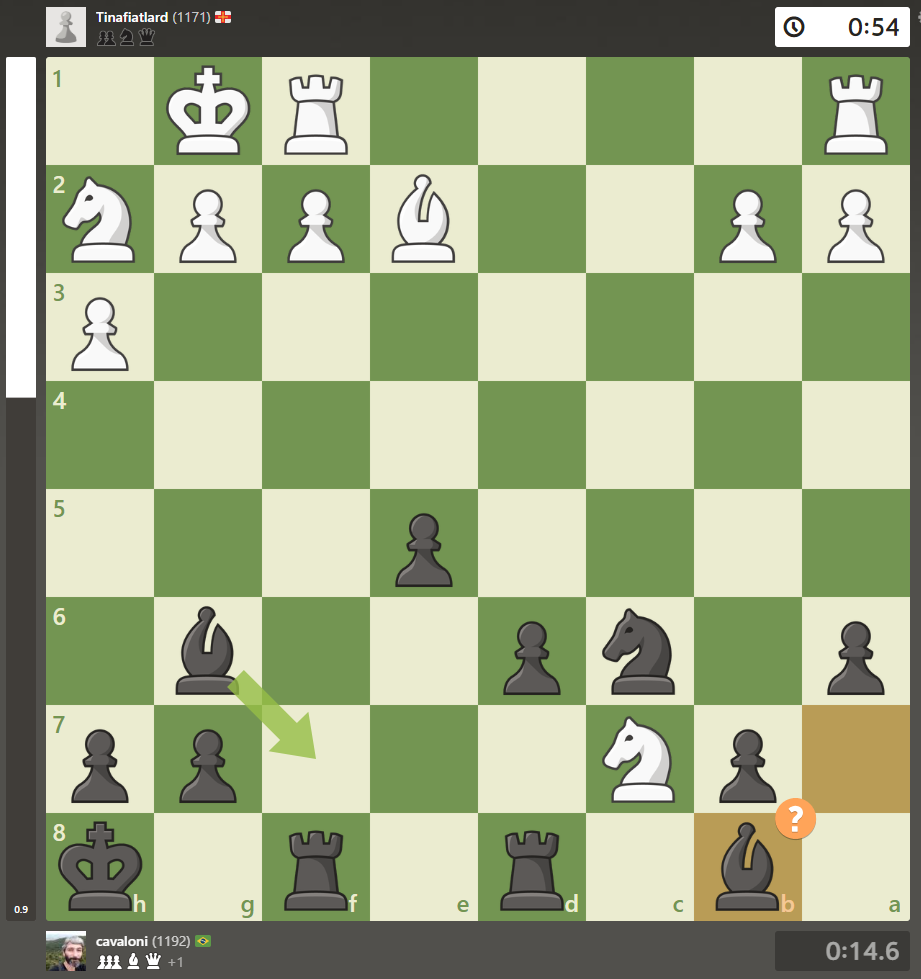
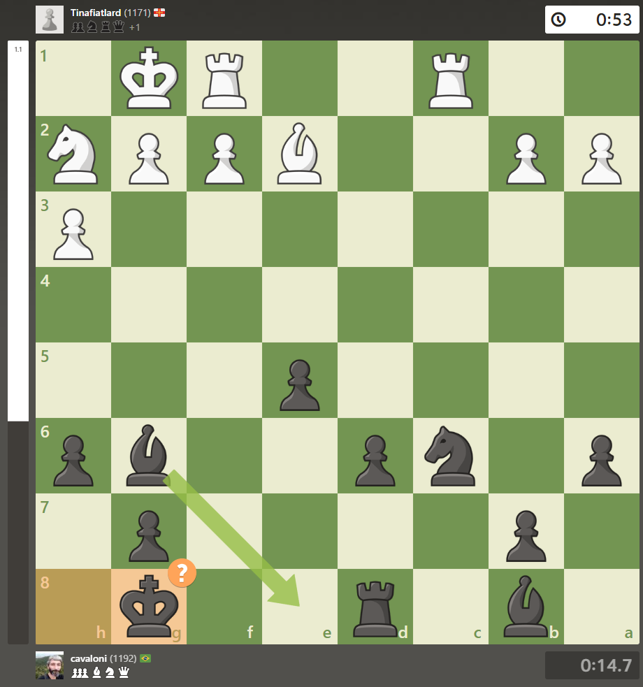
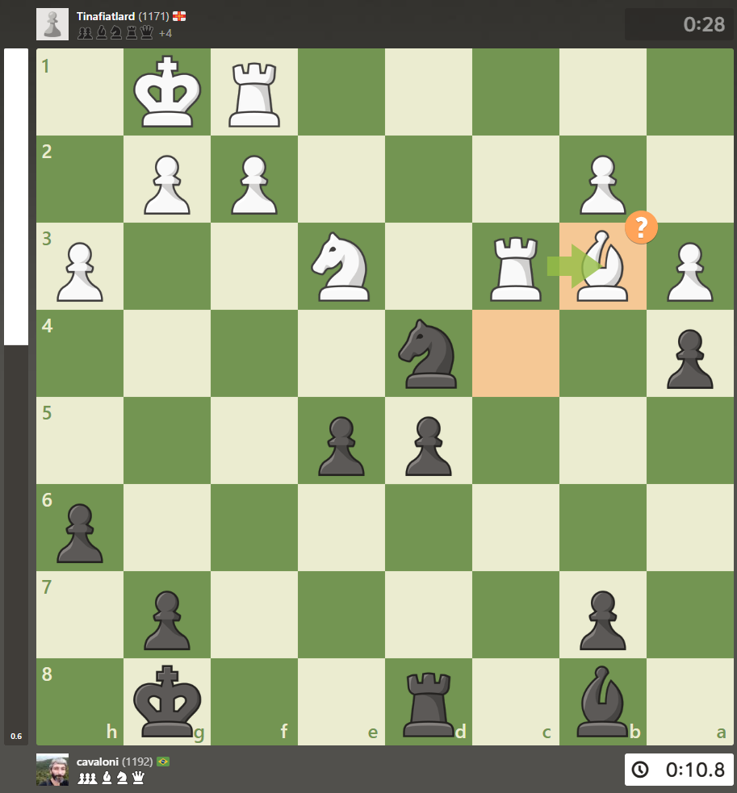
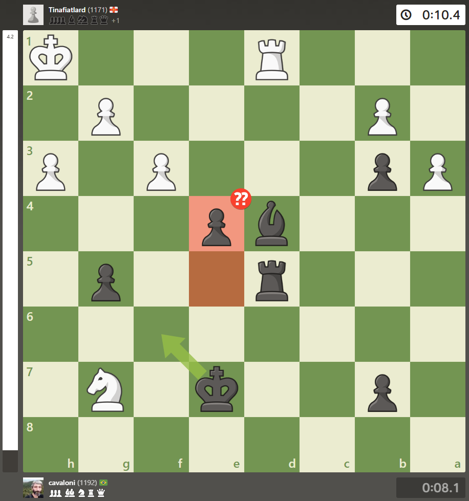
1. e4 e5 2. Nf3 Nc6 3. d4 exd4 4. Nxd4 Bc5 5. Nf3 Nge7 6. Nc3 O-O 7. Bg5 f6 8. Bh4 Ng6 9. Bg3 d6 10. Be2 Kh8 11. O-O Qe7 12. Nd5 Qxe4 13. Nxc7 Rb8 14. Nd5 Bf5 15. Nc3 Qxc2 16. Nb5 Rbd8 17. Qxc2 Bxc2 18. h3 Nge5 19. Bxe5 fxe5 20. Nh2 Bg6 21. Nc3 a6 22. Nd5 Ba7 23. Nc7 Bb8 24. Ne6 h6 25. Nxd8 Rxd8 26. Rac1 Kg8 27. Ng4 Bf7 28. a3 Nd4 29. Bd3 Bb3 30. Ne3 a5 31. Rc3 a4 32. Bc4+ d5 33. Bxb3 axb3 34. Rc5 Kf7 35. Nxd5 Bd6 36. Rc3 Ne2+ 37. Kh1 Nxc3 38. Nxc3 Bc7 39. f3 Bb6 40. Rd1 Bd4 41. Kh2 Ke6 42. Kg3 Kf5 43. Kh2 g5 44. Kh1 h5 45. Ne4 Rd5 46. Ng3+ Kf4 47. Nxh5+ Kf5 48. Ng7+ Kf6 49. Ne8+ Ke7 50. Ng7 e4 51. Nh5 exf3 52. gxf3 Ke6 53. Ng3 Ke5 54. Ne4 Be3 55. Kg2 Rxd1 56. Ng3 Bf4 57. Ne2 Rd2 58. Kf2 Rxb2 59. Kf1 Ra2 60. Nc3 Rxa3 61. Ne4 b2 62. Nc3 Ra1+ 0-1
(computer) You allowed the opponent to eventually win a knight.
(me) Estou andando na corda bamba e precisava acertar tudo.
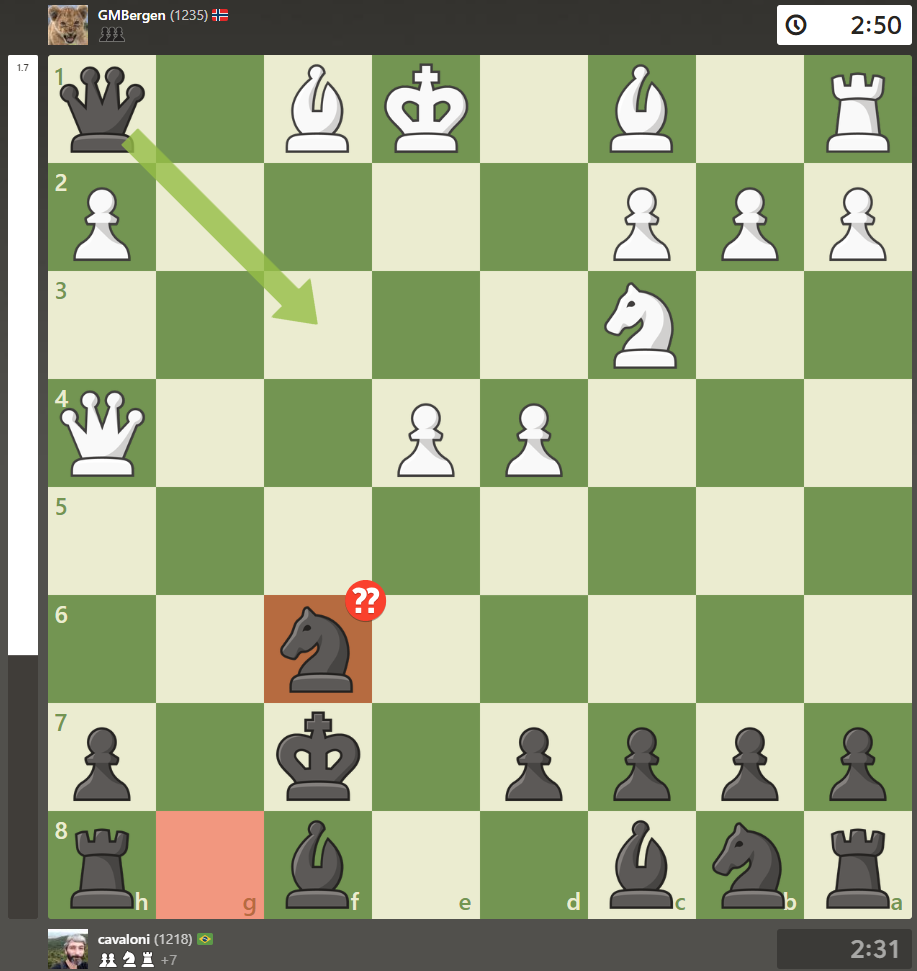
1. e4 e5 2. f4 exf4 3. Nf3 g5 4. d4 g4 5. Ne5 Qh4+ 6. g3 fxg3 7. Qxg4 g2+ 8. Qxh4 gxh1=Q 9. Nxf7 Kxf7 10. Nc3 Nf6 11. Bg5 Be7 12. O-O-O d6 13. Bxf6 Bxf6 14. Bc4+ d5 15. Bxd5+ Be6 16. Bxe6+ Kxe6 17. Qg4+ Ke7 18. Rxh1 Nd7 19. e5 Rhg8 20. exf6+ Nxf6 21. Re1+ Kf7 22. Qe6+ Kg6 23. Rg1+ Kh6 24. Qxf6+ Rg6 25. Rxg6+ hxg6 26. Ne4 Rg8 27. Qg5+ Kh7 28. Nf6+ 1-0
# Kick a Knight in a Sicilian Game
Caloni, 2025-01-08 chess english blogging [up] [copy]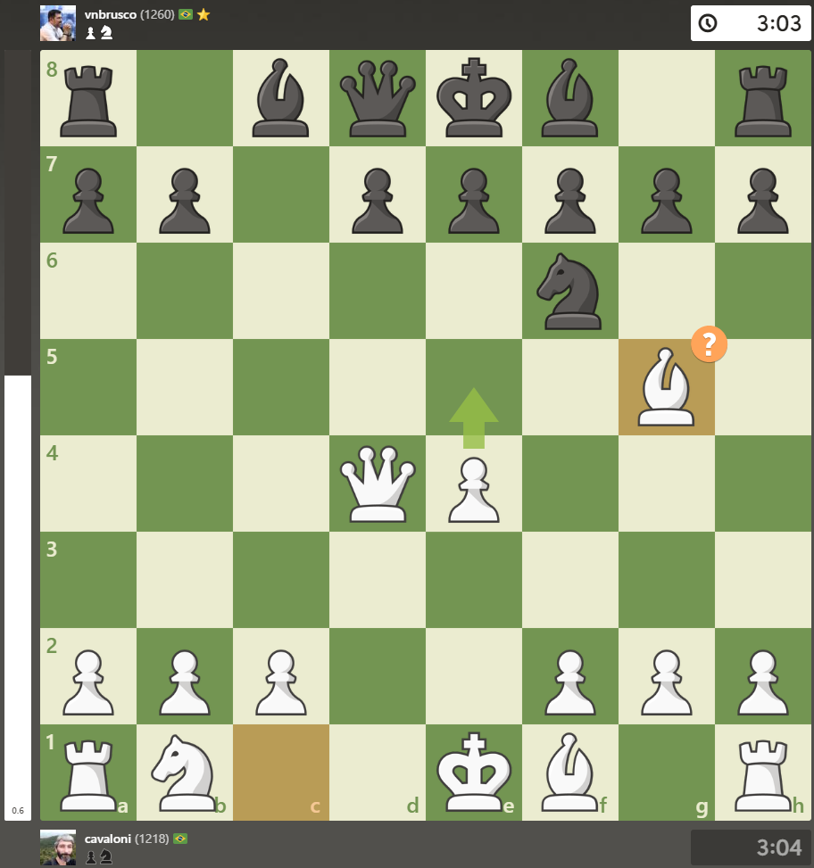
1. e4 c5 2. Nf3 Nc6 3. d4 cxd4 4. Nxd4 Nxd4 5. Qxd4 Nf6 6. Bg5 d6 7. Nc3 g6 8. Bxf6 exf6 9. Bb5+ Ke7 10. O-O-O a6 11. Nd5+ Ke6 12. Bc4 Kd7 13. Nxf6+ Kc7 14. Nd5+ Kd7 15. e5 Bg7 16. e6+ 1-0
# Um químico na cozinha (Haumont, Raphaël)
Caloni, 2025-01-09 cooking books [up] [copy]Ano passado havia comprado um livro de gastronomia que uma chef vendedora ambulante de brigadeiro recomendou enquanto estava vendendo sua mercadoria para nós, meros bêbados eventuais. Porém, tive que devolver no dia seguinte: o texto é muito ruim e confuso. Ele investe em defender cozinha molecular e eu, leitor desavisado, nem sabia que isso estava em ataque. Eu nem sabia que isso era uma coisa. Pra falar a verdade, não me identifico muito com essas cozinhas diferentonas que querem cobrar horrores pela experiência. De vez em quando é legal de ir, mas bem de vez em quando.
Voltando ao livro. O autor fica toda hora defendendo esse estilo de cozinhar e por algum motivo este deveria ser um livro para cozinheiros iniciantes na cozinha de casa. Não é. Eu não sei muito bem para quem é. Só sei que não é pra mim. Enfim, uma única anotação que fiz antes de abandonar o dito cujo:
Vidro e caramelo são sólidos amorfos, que podem ser representados como líquidos solidificados, desordenados: assim, sua estrutura interna não permite um movimento coletivo. Sob tensão, as forças de ligação se rompem e, macroscopicamente, a matéria quebra.
# Anotações de A Hacker Manifesto (Mckenzie Wark)
Caloni, 2025-01-09 philosophy books quotes [up] [copy]Hackers use their knowledge and their wits to maintain their autonomy. Some take the money and run. (We must live with our compromises.) Some refuse to compromise. (We live as best we can.)
We do not own what we produce—it owns us.
Hackers create the possibility of new things entering the world. Not always great things, or even good things, but new things.
The slogan of the hacker class is not the workers of the world united, but the workings of the world untied.
# Anotações de Head First Software Architecture (Raju Gandhi, Mark Richards;Neal Ford)
Caloni, 2025-01-09 computer books [up] [copy]Continuando minha saga de achar um bom livro de arquitetura de software.
Dispose plants that need more sunshine than others. To organize by water needs. Separate rhe problematic ones. To give a nice look by putting the prettiest one in the front.
What features of your home can you list that are structural and related to its architecture?
The walls are structural. The living room gives axxess to all other parts. The plumbing connects to the wet parts. There are windows to allow ventilation.
Check the things you think might be considered architectural characteristics—something that the structure of the software system supports.
Access scalability. Database integrity. Flexible customization. Access security.
Collectively, things like performance, scalability, reliability, and availability are also known as non-functional requirements,
Decisions are structural guides for dev teams Significant trade-offs are mostly their themes
A logical component should always have a well-defined role and responsibility in the system—in other words, what it does.
Logical components are blocks in conjunction They hold the source code for each business function
The domain is the problem you are trying to solve, and the system functionality is how you are solving that problem. In other words, the domain is the “what,” and the system’s functionality is the “how.”
Think about a typical website . The architecture, or structure, is all about how the web pages communicate with backend services and databases to retrieve and save data, whereas design is all about what each page looks like: the colors, the placement of the fields, and so on.
Unlike design, architecture is about the physical structure of the system—things like services, databases, and how services communicate with each other and to the user interface.
Check all of the things that should be included in a diagram from an architectural perspective.
Components communication. Non functional characteristics. Database access.
# Clean Architecture: A Craftsman's Guide to Software Structure and Design (Robert C. Martin aka Uncle Bob)
Caloni, 2025-01-09 computer books drafts [up] [copy]E finalmente achei =)
A good architecture comes from understanding it more as a journey than as a destination, more as an ongoing process of enquiry than as a frozen artifact.
The goal of software architecture is to minimize the human resources required to build and maintain the required system.
The measure of design quality is simply the measure of the effort required to meet the needs of the customer. If that effort is low, and stays low throughout the lifetime of the system, the design is good. If that effort grows with each new release, the design is bad. It’s as simple as that.
Software was invented to be “soft.” It was intended to be a way to easily change the behavior of machines. If we’d wanted the behavior of machines to be hard to change, we would have called it hardware.
The more this architecture prefers one shape over another, the more likely new features will be harder and harder to fit into that structure. Therefore architectures should be as shape agnostic are practical.
If you give me a program that works perfectly but is impossible to change, then it won’t work when the requirements change, and I won’t be able to make it work. Therefore the program will become useless. • If you give me a program that does not work but is easy to change, then I can make it work, and keep it working as requirements change. Therefore the program will remain continually useful.
The first value of software—behavior—is urgent but not always particularly important. The second value of software—architecture—is important but never particularly urgent.
Remember, as a software developer, you are a stakeholder. You have a stake in the software that you need to safeguard. That’s part of your role, and part of your duty. And it’s a big part of why you were hired.
Structured programming imposes discipline on direct transfer of control.
Object-oriented programming imposes discipline on indirect transfer of control.
Functional programming imposes discipline upon assignment.
We use polymorphism as the mechanism to cross architectural boundaries; we use functional programming to impose discipline on the location of and access to data; and we use structured programming as the algorithmic foundation of our modules. Notice how well those three align with the three big concerns of architecture: function, separation of components, and data management.
In 1955, having been a programmer for three years, and while still a student, Dijkstra concluded that the intellectual challenge of programming was greater than the intellectual challenge of theoretical physics. As a result, he chose programming as his long-term career.
Nowadays we are all structured programmers, though not necessarily by choice. It’s just that our languages don’t give us the option to use undisciplined direct transfer of control.
Ultimately, we can say that mathematics is the discipline of proving provable statements true. Science, in contrast, is the discipline of proving provable statements false.
OO certainly does depend on the idea that programmers are well-behaved enough to not circumvent encapsulated data. Even so, the languages that claim to provide OO have only weakened the once perfect encapsulation we enjoyed with C.
Note, however, that the source code dependency (the inheritance relationship) between ML1 and the interface I points in the opposite direction compared to the flow of control. This is called dependency inversion, and its implications for the software architect are profound.
With this approach, software architects working in systems written in OO languages have absolute control over the direction of all source code dependencies in the system.
Architects would be wise to push as much processing as possible into the immutable components, and to drive as much code as possible out of those components that must allow mutation.
With that realization, we have to face an unwelcome fact: Software is not a rapidly advancing technology. The rules of software are the same today as they were in 1946, when Alan Turing wrote the very first code that would execute in an electronic computer. The tools have changed, and the hardware has changed, but the essence of software remains the same.
Software—the stuff of computer programs—is composed of sequence, selection, iteration, and indirection. Nothing more. Nothing less.
The best structure for a software system is heavily influenced by the social structure of the organization that uses it so that each software module has one, and only one, reason to change.
The gist is that for software systems to be easy to change, they must be designed to allow the behavior of those systems to be changed by adding new code, rather than changing existing code.
In short, this principle says that to build software systems from interchangeable parts, those parts must adhere to a contract that allows those parts to be substituted one for another.
This principle advises software designers to avoid depending on things that they don’t use.
The code that implements high-level policy should not depend on the code that implements low-level details. Rather, details should depend on policies.
A module should have one, and only one, reason to change.
A module should be responsible to one, and only one, user or stakeholder.
A module should be responsible to one, and only one, actor.
Cohesion is the force that binds together the code responsible to a single actor.
A software artifact should be open for extension but closed for modification.
We want to protect the Controller from changes in the Presenters. We want to protect the Presenters from changes in the Views. We want to protect the Interactor from changes in—well, anything. The
We want to protect the Controller from changes in the Presenters. We want to protect the Presenters from changes in the Views. We want to protect the Interactor from changes in—well, anything.
Notice how this creates a hierarchy of protection based on the notion of “level.” Interactors are the highest-level concept, so they are the most protected. Views are among the lowest-level concepts, so they are the least protected. Presenters are higher level than Views, but lower level than the Controller or the Interactor.
The goal is to make the system easy to extend without incurring a high impact of change. This goal is accomplished by partitioning the system into components, and arranging those components into a dependency hierarchy that protects higher-level components from changes in lower-level components.
What is wanted here is something like the following substitution property: If for each object o1 of type S there is an object o2 of type T such that for all programs P defined in terms of T, the behavior of P is unchanged when o1 is substituted for o2 then S is a subtype of T.
The Dependency Inversion Principle (DIP) tells us that the most flexible systems are those in which source code dependencies refer only to abstractions, not to concretions.
Every change to an abstract interface corresponds to a change to its concrete implementations. Conversely, changes to concrete implementations do not always, or even usually, require changes to the interfaces that they implement. Therefore interfaces are less volatile than implementations.
Components are the units of deployment. They are the smallest entities that can be deployed as part of a system.
People who want to reuse software components cannot, and will not, do so unless those components are tracked through a release process and are given release numbers.
PRINCIPLE Gather into components those classes that change for the same reasons and at the same times. Separate
Gather into components those classes that change for the same reasons and at the same times. Separate into different components those classes that change at different times and for different reasons.
Gather together those things that change at the same times and for the same reasons. Separate those things that change at different times or for different reasons.
Don’t force users of a component to depend on things they don’t need.
Don’t depend on things you don’t need.
Therefore the CRP tells us more about which
The CRP says that classes that are not tightly bound to each other should not be in the same component.
The REP and CCP are inclusive principles: Both tend to make components larger. The CRP is an exclusive principle, driving components to be smaller. It is the tension between these principles that good architects seek to resolve.
Cohesion principles tension diagram
Allow no cycles in the component dependency graph.
Regardless of which component you begin at, it is impossible to follow the dependency relationships and wind up back at that component. This structure has no cycles. It is a directed acyclic graph (DAG).
By conforming to the Stable Dependencies Principle (SDP), we ensure that modules that are intended to be easy to change are not depended on by modules that are harder to change.
One sure way to make a software component difficult to change, is to make lots of other software components depend on it.
The SDP says that the I metric of a component should be larger than the I metrics of the components that it depends on. That is, I metrics should decrease in the direction of dependency.
A component should be as abstract as it is stable.
The Stable Abstractions Principle (SAP) sets up a relationship between stability and abstractness.
The SAP and the SDP combined amount to the DIP for components. This is true because the SDP says that dependencies should run in the direction of stability, and the SAP says that stability implies abstraction. Thus dependencies run in the direction of abstraction.
Some software entities do, in fact, fall within the Zone of Pain. An example would be a database schema. Database schemas are notoriously volatile, extremely concrete, and highly depended on. This is one reason why the interface between OO applications and databases is so difficult to manage, and why schema updates are generally painful.
However, the architecture of a system has very little bearing on whether that system works. There are many systems out there, with terrible architectures, that work just fine. Their troubles do not lie in their operation; rather, they occur in their deployment, maintenance, and ongoing development.
The primary purpose of architecture is to support the life cycle of the system. Good architecture makes the system easy to understand, easy to develop, easy to maintain, and easy to deploy. The ultimate goal is to minimize the lifetime cost of the system and to maximize programmer productivity.
The primary cost of maintenance is in spelunking and risk. Spelunking is the cost of digging through the existing software, trying to determine the best place and the best strategy to add a new feature or to repair a defect. While making such changes, the likelihood of creating inadvertent defects is always there, adding to the cost of risk.
Software was invented because we needed a way to quickly and easily change the behavior of machines. But that flexibility depends critically on the shape of the system, the arrangement of its components, and the way those components are interconnected.
The way you keep software soft is to leave as many options open as possible, for as long as possible. What are the options that we need to leave open? They are the details that don’t matter.
The goal of the architect is to create a shape for the system that recognizes policy as the most essential element of the system while making the details irrelevant to that policy. This allows decisions about those details to be delayed and deferred.
If you can develop the high-level policy without committing to the details that surround it, you can delay and defer decisions about those details for a long time. And the longer you wait to make those decisions, the more information you have with which to make them properly.
A good architect pretends that the decision has not been made, and shapes the system such that those decisions can still be deferred or changed for as long as possible.
A good architect maximizes the number of decisions not made.
Conway’s law says: Any organization that designs a system will produce a design whose structure is a copy of the organization’s communication structure.
So the architect can employ the Single Responsibility Principle and the Common Closure Principle to separate those things that change for different reasons, and to collect those things that change for the same reasons—given the context of the intent of the system.
Thus we find the system divided into decoupled horizontal layers—the UI, application-specific business rules, application-independent business rules, and the database, just to mention a few.
At the same time, use cases are narrow vertical slices that cut through the horizontal layers of the system. Each use case uses some UI, some application-specific business rules, some application-independent business rules, and some database functionality.
If two apparently duplicated sections of code evolve along different paths—if they change at different rates, and for different reasons—then they are not true duplicates.
Return to them in a few years, and you’ll find that they are very different from each other.
You may be tempted to simply pass the database record up to the UI, rather than to create a view model that looks the same and copy the elements across. Be careful: This duplication is almost certainly accidental.
A good architecture will allow a system to be born as a monolith, deployed in a single file, but then to grow into a set of independently deployable units, and then all the way to independent services and/or micro-services. Later, as things change, it should allow for reversing that progression and sliding all the way back down into a monolith.
You draw lines between things that matter and things that don’t.
The Database component contains the code that translates the calls made by the BusinessRules into the query language of the database. It is that translation code that knows about the BusinessRules.
The Database component could be replaced with many different implementations—the BusinessRules don’t care.
The business rules don’t care at all. And that means that the database decision can be deferred and you can focus on getting the business rules written and tested before you have to make the database decision.
They define a system in terms of the GUI, so they believe that they should see the GUI start working immediately. They fail to realize a critically important principle: The IO is irrelevant.
You forget that behind that interface there is a model—a sophisticated set of data structures and functions—driving it. More importantly, that model does not need the interface. It would happily execute its duties, modeling all the events in the game, without the game ever being displayed on the screen. The interface does not matter to the model—the business rules.
Once again, we see that the less relevant component depends on the more relevant component.
Indeed, the history of software development technology is the story of how to conveniently create plugins to establish a scalable and maintainable system architecture. The core business rules are kept separate from, and independent of, those components that are either optional or that can be implemented in many different forms
This is simply the Single Responsibility Principle again. The SRP tells us where to draw our boundaries.
You should recognize this as an application of the Dependency Inversion Principle and the Stable Abstractions Principle. Dependency arrows are arranged to point from lower-level details to higher-level abstractions.
Software systems are statements of policy. Indeed, at its core, that’s all a computer program actually is. A computer program is a detailed description of the policy by which inputs are transformed into outputs.
Part of the art of developing a software architecture is carefully separating those policies from one another, and regrouping them based on the ways that they change. Policies that change for the same reasons, and at the same times, are at the same level and belong together in the same component. Policies that change for different reasons, or at different times, are at different levels and should be separated into different components.
The art of architecture often involves forming the regrouped components into a directed acyclic graph. The nodes of the graph are the components that contain policies at the same level. The directed edges are the dependencies between those components. They connect components that are at different levels.
A strict definition of “level” is “the distance from the inputs and outputs.”
We want source code dependencies to be decoupled from data flow and coupled to level.
Any component that we expect to be volatile should not be depended on by a component that is difficult to change. Otherwise, the volatile component will also be difficult to change.
Strictly speaking, business rules are rules or procedures that make or save the business money. Very strictly speaking, these rules would make or save the business money, irrespective of whether they were implemented on a computer. They would make or save money even if they were executed manually.
An Entity is an object within our computer system that embodies a small set of critical business rules operating on Critical Business Data. The Entity object either contains the Critical Business Data or has very easy access to that data. The interface of the Entity consists of the functions that implement the Critical Business Rules that operate on that data.
A use case is a description of the way that an automated system is used. It specifies the input to be provided by the user, the output to be returned to the user, and the processing steps involved in producing that output. A use case describes application-specific business rules as opposed to the Critical Business Rules within the Entities.
Use cases contain the rules that specify how and when the Critical Business Rules within the Entities are invoked. Use cases control the dance of the Entities.
Entities have no knowledge of the use cases that control them. This is another example of the direction of the dependencies following the Dependency Inversion Principle. High-level concepts, such as Entities, know nothing of lower-level concepts, such as use cases. Instead, the lower-level use cases know about the higher-level Entities.
You might be tempted to have these data structures contain references to Entity objects. You might think this makes sense because the Entities and the request/response models share so much data. Avoid this temptation! The purpose of these two objects is very different. Over time they will change for very different reasons, so tying them together in any way violates the Common Closure and Single Responsibility Principles. The result would be lots of tramp data, and lots of conditionals in your code.
Good architectures are centered on use cases so that architects can safely describe the structures that support those use cases without committing to frameworks, tools, and environments.
Develop a strategy that prevents the framework from taking over that architecture.
If your system architecture is all about the use cases, and if you have kept your frameworks at arm’s length, then you should be able to unit-test all those use cases without any of the frameworks in place.
The overriding rule that makes this architecture work is the Dependency Rule: Source code dependencies must point only inward, toward higher-level policies.
The presenters, views, and controllers all belong in the interface adapters layer. The models are likely just data structures that are passed from the controllers to the use cases, and then back from the use cases to the presenters and views.
Also in this layer is any other adapter necessary to convert data from some external form, such as an external service, to the internal form used by the use cases and entities.
The frameworks and drivers layer is where all the details go. The web is a detail. The database is a detail. We keep these things on the outside where they can do little harm.
We take advantage of dynamic polymorphism to create source code dependencies that oppose the flow of control so that we can conform to the Dependency Rule, no matter which direction the flow of control travels.
Typically the data that crosses the boundaries consists of simple data structures.
The important thing is that isolated, simple data structures are passed across the boundaries. We don’t want to cheat and pass Entity objects or database rows.
Thus, when we pass data across a boundary, it is always in the form that is most convenient for the inner circle.
The Humble Object pattern1 is a design pattern that was originally identified as a way to help unit testers to separate behaviors that are hard to test from behaviors that are easy to test.
The View is the humble object that is hard to test.
Presenter is the testable object. Its job is to accept data from the application and format it for presentation so that the View can simply move it to the screen.
Anything and everything that appears on the screen, and that the application has some kind of control over, is represented in the View Model as a string, or a boolean, or an enum. Nothing is left for the View to do other than to load the data from the View Model into the screen. Thus the View is humble.
(...) the separation of the behaviors into testable and non-testable parts often defines an architectural boundary.
For example, if the application needs to know the last names of all the users who logged in yesterday, then the UserGateway interface will have a method named getLastNamesOfUsersWhoLoggedInAfter that takes a Date as its argument and returns a list of last names.
At each architectural boundary, we are likely to find the Humble Object pattern lurking somewhere nearby. The communication across that boundary will almost always involve some kind of simple data structure, and the boundary will frequently divide something that is hard to test from something that is easy to test.
This kind of anticipatory design is often frowned upon by many in the Agile community as a violation of YAGNI: “You Aren’t Going to Need It.” Architects, however, sometimes look at the problem and think, “Yeah, but I might.” In that case, they may implement a partial boundary.
This example is intended to show that architectural boundaries exist everywhere. We, as architects, must be careful to recognize when they are needed. We also have to be aware that such boundaries, when fully implemented, are expensive. At the same time, we have to recognize that when such boundaries are ignored, they are very expensive to add in later—even in the presence of comprehensive test-suites and refactoring discipline.
Your goal is to implement the boundaries right at the inflection point where the cost of implementing becomes less than the cost of ignoring.
Think of Main as the dirtiest of all the dirty components.
The point is that Main is a dirty low-level module in the outermost circle of the clean architecture. It loads everything up for the high level system, and then hands control over to it.
Think of Main as a plugin to the application—a
you can think of the tests as the outermost circle in the architecture. Nothing within the system depends on the tests, and the tests always depend inward on the components of the system.
Fragile tests often have the perverse effect of making the system rigid. When developers realize that simple changes to the system can cause massive test failures, they may resist making those changes.
Non-embedded engineers also write firmware! You non-embedded developers essentially write firmware whenever you bury SQL in your code or when you spread platform dependencies throughout your code.
In The Mythical Man-Month, Fred Brooks suggests we “plan to throw one away.”
Programmers, embedded or not, who just concern themselves with getting their app to work are doing their products and employers a disservice. There is much more to programming than just getting an app to work.
If the target is the only place where testing is possible, the target-hardware bottleneck will slow you down.
Many data access frameworks allow database rows and tables to be passed around the system as objects. Allowing this is an architectural error. It couples the use cases, business rules, and in some cases even the UI to the relational structure of the data.
The organizational structure of data, the data model, is architecturally significant. The technologies and systems that move data on and off a rotating magnetic surface are not.
The web is just the latest in a series of oscillations that our industry has gone through since the 1960s. These oscillations move back and forth between putting all the computer power in central servers and putting all computer power out at the terminals.
Think about it this way: The WEB is an IO device. In the 1960s, we learned the value of writing applications that were device independent. The motivation for that independence has not changed. The web is not an exception to that rule.
If the framework wants you to derive your business objects from its base classes, say no! Derive proxies instead, and keep those proxies in components that are plugins to your business rules.
USE CASE ANALYSIS Figure 33.1 shows a typical use-case analysis.
Input occurs at the controllers, and that input is processed into a result by the interactors. The presenters then format the results, and the views display those presentations.
Also notice that the using relationships (open arrows) point with the flow of control, and that the inheritance relationships (closed arrows) point against the flow of control. This depicts our use of the Open–Closed Principle to make sure that the dependencies flow in the right direction, and that changes to low-level details do not ripple upward to affect high-level policies.
as Uncle Bob has already said, a layered architecture doesn’t scream anything about the business domain. Put the code for two layered architectures, from two very different business domains, side by side and they will likely look eerily similar: web, services, and repositories.
Uncle Bob presented his definition of “component” earlier in the book, saying: Components are the units of deployment. They are the smallest entities that can be deployed as part of a system.
My definition of a component is slightly different: “A grouping of related functionality behind a nice clean interface, which resides inside an execution environment like an application.”
Looking at this issue another way, if you make all types in your Java application public, the packages are simply an organization mechanism (a grouping, like folders), rather than being used for encapsulation.
your best design intentions can be destroyed in a flash if you don’t consider the intricacies of the implementation strategy.
You can’t make a reusable framework until you first make a usable framework. Reusable frameworks require that you build them in concert with several reusing applications.
# 14 Hábitos de Desenvolvedores Altamente Produtivos (Rocha, Zeno)
Caloni, 2025-01-09 quotes self [up] [copy]Imagine que você gira o dial e está apenas captando ruído estático, mas depois de alguns segundos frustrantes, ele finalmente consegue captar um sinal e sintonizar uma estação. O sinal é a informação significativa na qual você realmente está interessado. O ruído estático é apenas a variação aleatória e indesejada que interfere no sinal. É por isso que a autoconsciência é tão importante, você precisa ser capaz de identificar qual é o sinal e o que é apenas ruído. (...) É crucial entender que o barulho sempre estará lá.
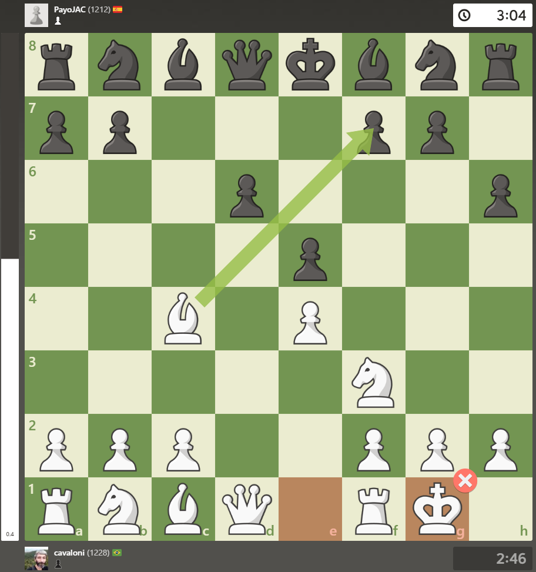
1. e4 c5 2. Nf3 e6 3. d4 cxd4 4. Nxd4 e5 5. Nf3 d6 6. Bc4 h6 7. O-O Nf6 8. Re1 Be7 9. Nc3 Bg4 10. Qd3 Nc6 11. a3 a6 12. Nd5 Bxf3 13. Nxf6+ Bxf6 14. Qxf3 Nd4 15. Qd3 b5 16. Bd5 Rc8 17. c3 Nb3 18. Bxb3 O-O 19. Bd5 Rc7 20. Be3 Qb8 21. Rac1 Be7 22. Rc2 Bg5 23. Bxg5 hxg5 24. Qg3 Qd8 25. Qg4 Re8 26. Re3 Kf8 27. Rh3 f6 28. Rh8+ 1-0
# This move loses a pawn (Italian Game)
Caloni, 2025-01-10 chess english blogging [up] [copy]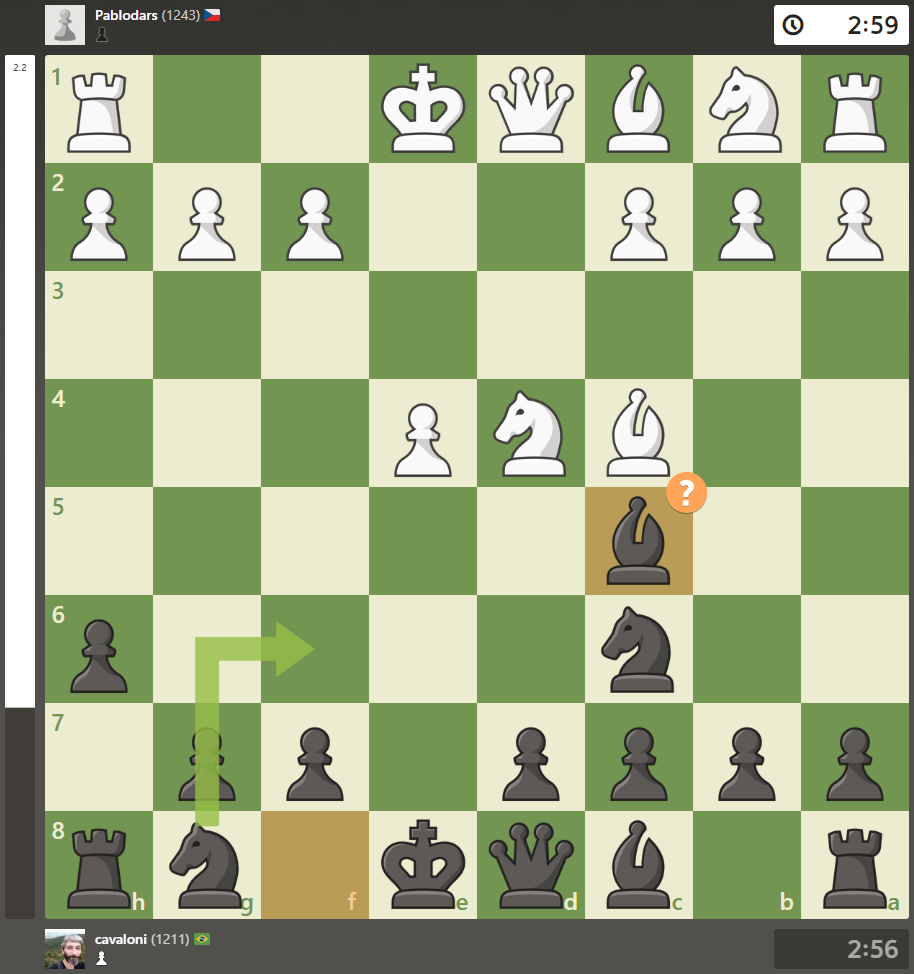
1. e4 e5 2. Nf3 Nc6 3. Bc4 h6 4. d4 exd4 5. Nxd4 Bc5 6. Nxc6 dxc6 7. Qf3 Be6 8. Bxe6 fxe6 9. Nc3 Nf6 10. Bf4 O-O 11. Rd1 Qe7 12. O-O Rad8 13. Be5 Nd7 14. Qg3 Nxe5 15. Qxe5 Bd6 16. Qh5 Qf6 17. Rde1 Be5 18. f4 Bxc3 19. bxc3 Qxc3 20. f5 exf5 21. exf5 Qxc2 22. f6 Qc4 23. fxg7 Qd4+ 24. Kh1 Qxg7 25. Rxf8+ Rxf8 26. Qc5 Qf6 27. Qc4+ Kg7 28. Qg4+ Qg5 29. Re7+ Rf7 30. Qd4+ Qf6 31. Qg4+ Kf8 32. Rxf7+ Kxf7 33. Qd7+ Qe7 34. Qf5+ Ke8 35. Qg6+ Kd7 36. Qf5+ Qe6 37. Qh7+ Kd6 38. Qd3+ Qd5 39. Qg6+ Kc5 40. Qc2+ Qc4 41. Qf5+ Kb6 42. Qf2+ Qc5 43. Qb2+ Qb5 44. Qf2+ c5 45. Qf6+ c6 46. h3 h5 47. Qc3 Qb1+ 48. Kh2 Qh7 49. Qb3+ Kc7 50. a4 a6 51. a5 Qd7 52. Qb6+ Kb8 53. Qxc5 Qd5 54. Qf8+ Ka7 55. Qf2+ c5 56. Qf6 Qc6 57. Qg5 Qb5 58. Qxh5 Qxa5 59. Qd5 Qb6 60. h4 a5 61. h5 Qc6 62. Qxc6 bxc6 63. h6 c4 64. h7 c3 65. h8=Q c2 66. Qc3 c1=Q 67. Qxc1 Kb6 68. Qb2+ Kc7 69. Kg3 c5 70. Kf4 Kc6 71. Ke4 a4 72. Qa3 Kb5 73. Kd5 c4 74. Qc5+ Ka6 75. Qxc4+ Ka5 76. Qa2 a3 77. Qxa3+ Kb5 78. Qb3+ Ka6 79. Kc5 Ka7 80. Kc6 Ka8 81. Qb7# 1-0
# Colinha que todos usamos para esperar o debugger quando o notepad inicia
Caloni, 2025-01-13 computer [up] [copy]Ou qualquer outro processo (mas a vítima padrão continua sendo o notepad).
int WaitForDebugger(const char* processName = "notepad", int timeout = 60)
{
int secondsWaiting = 0;
char fileName[MAX_PATH];
GetModuleFileNameA(nullptr, fileName, MAX_PATH);
if( StrStrIA(fileName, processName))
{
while( IsDebuggerPresent() == FALSE && secondsWaiting < timeout )
{
Sleep(1000);
secondsWaiting++;
}
}
return secondsWaiting;
}
# Flow em português
Caloni, 2025-01-13 books self drafts [up] [copy]Sem mais o que ler, estou pegando agora a versão em português que eu adquiri por ter me arrependido de ter comprado um livro muito ruim de gastronomia chamado Um Químico na Cozinha. Estou tentando criar recortes minimalistas que dão uma visão ligeiramente diferente das minhas primeiras leituras em inglês.
Quando as pessoas tentam alcançar a felicidade por conta própria, sem a ajuda de uma fé, em geral procuram maximizar prazeres que estão biologicamente programados em seus genes ou que sejam vistos como atraentes pela sociedade em que vivem.
Mas a qualidade de vida não pode ser melhorada dessa maneira. Só o controle direto da experiência, a capacidade de apreciar momento a momento tudo o que fazemos, pode superar os obstáculos para a realização pessoal.
O principal motivo de ser tão difícil conquistar a felicidade é que o universo não foi projetado levando o conforto dos seres humanos em consideração.
Como escreveu J. S. Mill: “Nenhum grande aperfeiçoamento da humanidade como um todo é possível até que uma grande mudança tenha lugar na constituição fundamental de seu modo de pensar”.
Quando as pessoas começam a acreditar que o progresso é inevitável e a vida é fácil, podem rapidamente perder a coragem e a determinação aos primeiros sinais de adversidade.
Somos meras partículas de poeira esquecidas vagando pelo vácuo. A cada ano que passa, o caos do universo físico é ampliado na mente coletiva.
A essência da socialização é tornar as pessoas dependentes de controles sociais, fazer com que reajam previsivelmente a recompensas e punições.
Praticamente todo desejo que se tornou parte da natureza humana, da sexualidade à agressão, da aspiração por segurança a uma receptividade à mudança, foi explorado como fonte de controle social por políticos, igrejas, corporações e publicitários.
Alguém incapaz de ignorar suas instruções genéticas quando necessário está sempre vulnerável.
O passo mais importante para se emancipar dos controles sociais é a capacidade de a todo momento encontrar recompensas nos eventos.
Uma vez que, até onde nos diz respeito, nossa experiência é a realidade, podemos transformá-la na medida em que influenciarmos o que acontece no consciente e, desse modo, nos libertar das ameaças e seduções do mundo externo.
O progresso é relativamente rápido em áreas que aplicam conhecimento ao mundo material, como física ou genética. Mas é dolorosamente lento quando a aplicação do conhecimento visa modificar nossos hábitos e desejos.
O controle da consciência não pode ser institucionalizado. Assim que passa a integrar um conjunto de regras e normas sociais, ele deixa de ser eficaz do modo como originalmente se pretendera.
Uma pessoa pode ficar feliz, ou sofrer terrivelmente, independente do que esteja ocorrendo do lado de “fora”, apenas mudando o conteúdo da consciência.
Os eventos que constituem a consciência — as “coisas” que vemos, sentimos, pensamos e desejamos — são uma informação que podemos manipular e usar.
Embora acreditemos que existem “coisas” fora da consciência, temos evidência direta apenas das que encontram um lugar nela.
Alguém com fome não tem consciência da taxa de glicose em sua corrente sanguínea; sabe apenas da existência de um bit de informação em sua consciência que aprendeu a identificar como “fome”.
# What we do not know (Nicolas Gomez Davila)
Caloni, 2025-01-15 quotes self [up] [copy]In an age in which the media broadcast countless pieces of foolishness, the educated man is defined not by what he knows, but by what he doesn't know.
Nicolas Gomez Davila
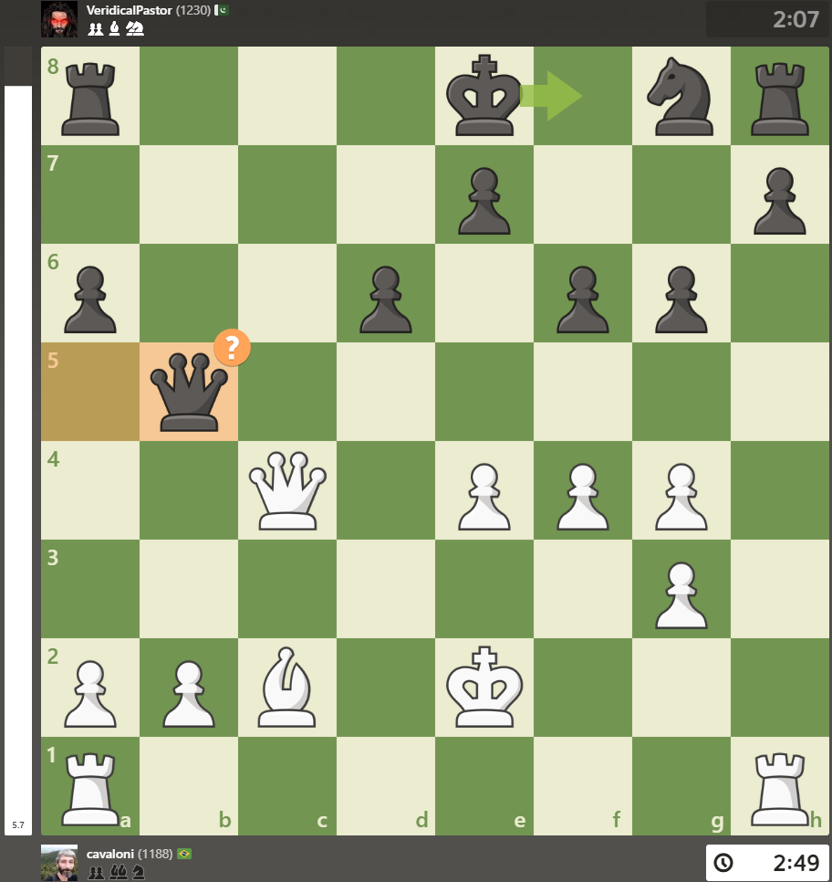
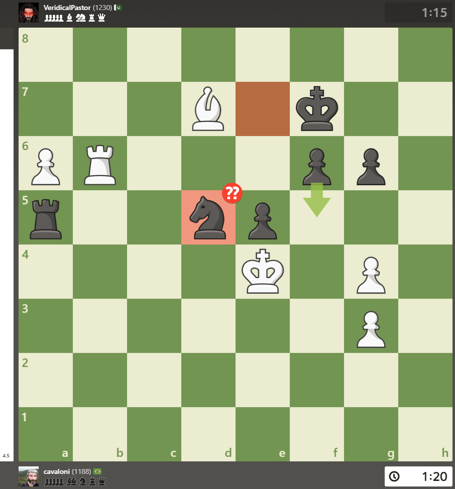
1. e4 c5 2. Nf3 g6 3. d4 Bg7 4. c3 Nc6 5. Be3 d6 6. Nbd2 Bg4 7. Bb5 a6 8. Ba4 b5 9. Bc2 cxd4 10. cxd4 Bxd4 11. h3 Bxe3 12. hxg4 Bf4 13. g3 Be5 14. Nxe5 Nxe5 15. f4 Nc4 16. Nxc4 bxc4 17. Qd4 Qa5+ 18. Ke2 f6 19. Qxc4 Qb5 20. Qxb5+ axb5 21. Bd3 b4 22. a3 bxa3 23. Rxa3 Rxa3 24. bxa3 Kf7 25. Bc4+ Kg7 26. a4 e5 27. Bb5 Ne7 28. Rc1 Ra8 29. Rc7 Kf8 30. f5 d5 31. fxg6 hxg6 32. Ke3 dxe4 33. Kxe4 Rd8 34. Rd7 Rc8 35. a5 Rc5 36. Rd8+ Kf7 37. Be8+ Kg7 38. a6 Ra5 39. Rd6 Kf8 40. Bd7 Kf7 41. Rb6 Nd5 42. Rd6 Nc3+ 43. Kd3 Nb5 44. Bxb5 Rxb5 45. a7 Ra5 46. Rd7+ Ke6 47. Rb7 f5 48. gxf5+ Kxf5 49. Kc4 Kg4 50. Kb4 Ra1 51. Rg7 Kf5 52. g4+ Kxg4 53. Rxg6+ Kf5 54. Rg7 e4 55. Kc3 e3 56. Kd3 Ra3+ 57. Ke2 Kf4 58. Rf7+ Ke4 59. Re7+ Kf4 60. Rf7+ Ke4 61. Re7+ Kf4 62. Rf7+ 1/2-1/2
# Tight Vienna Gambit miniature with brilliant move
Caloni, 2025-01-20 chess english blogging [up] [copy]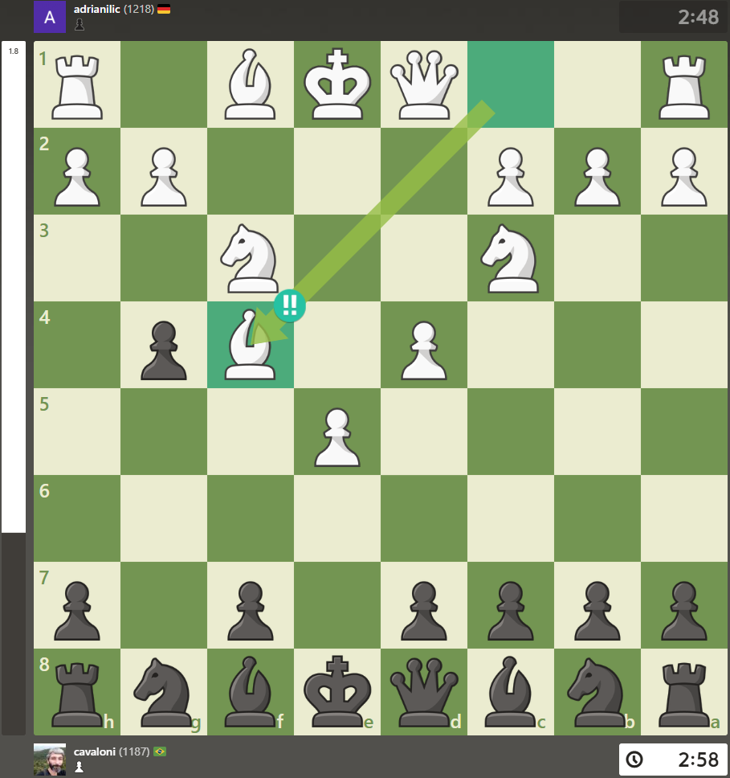
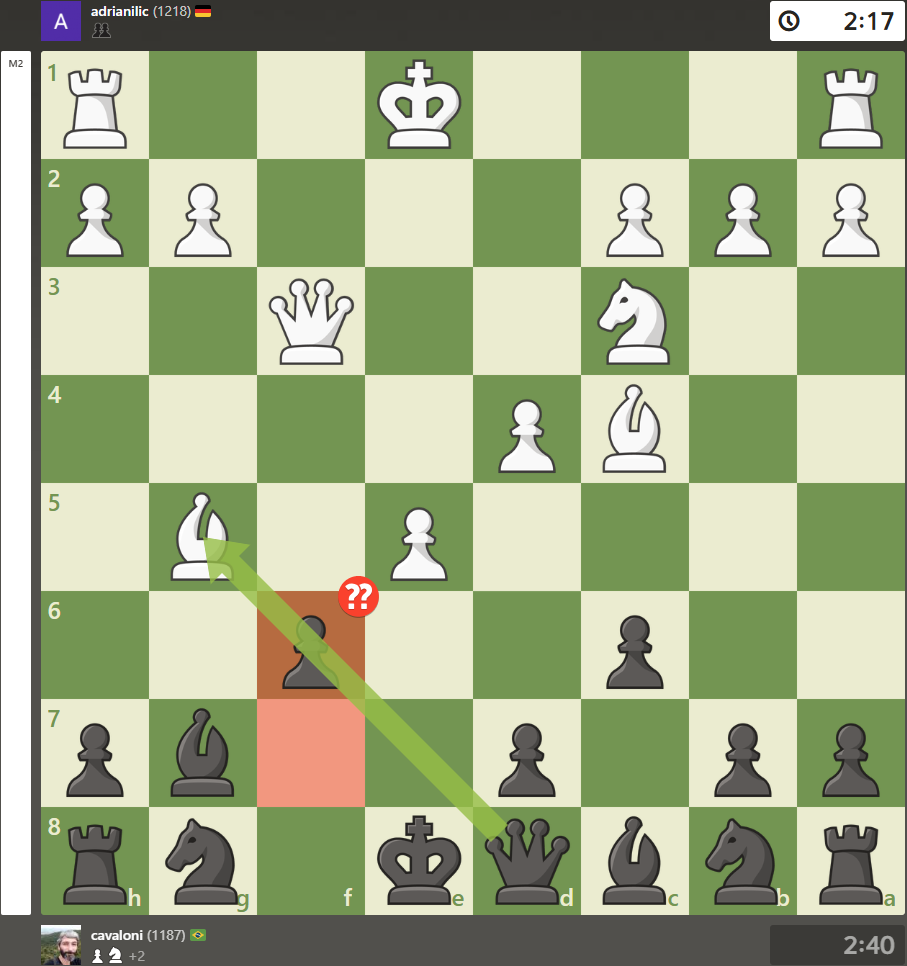
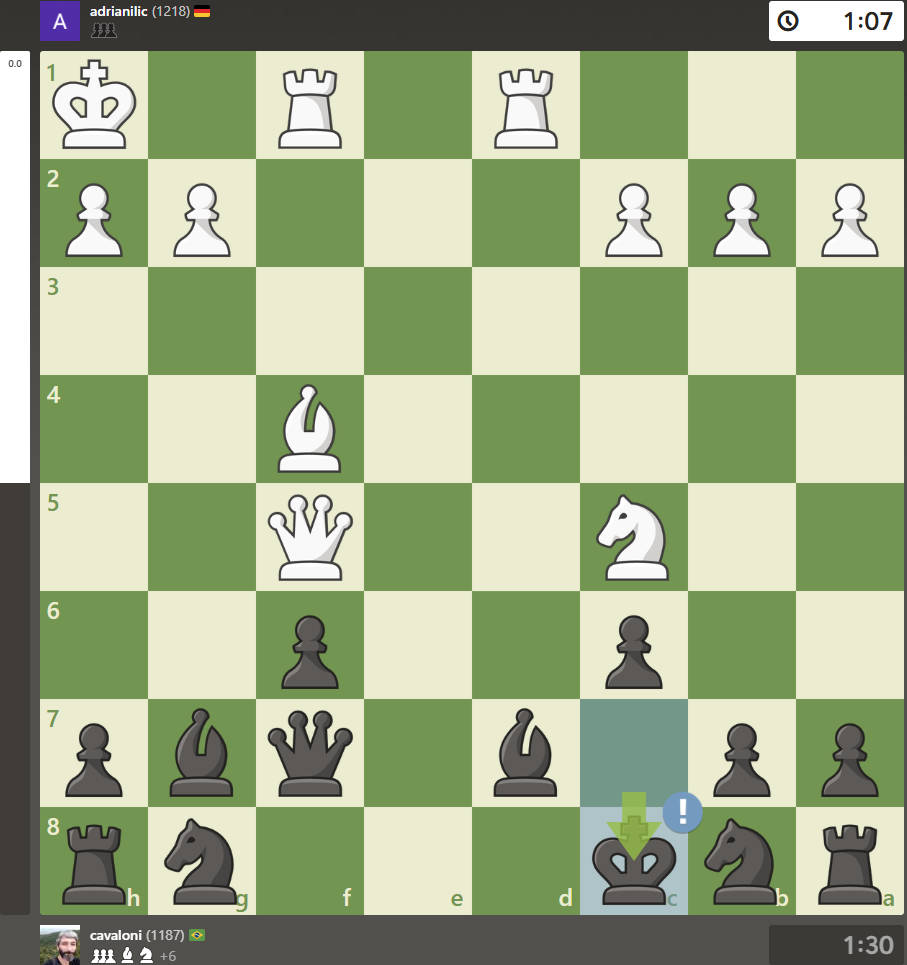
1. e4 e5 2. Nc3 Nf6 3. f4 exf4 4. e5 Ng8 5. Nf3 g5 6. d4 g4 7. Bxf4 gxf3 8. Qxf3 Bg7 9. Bc4 c6 10. Bg5 f6 11. O-O d5 12. exd6 Qxd6 13. Rae1+ Kd8 14. Ne4 Qxd4+ 15. Kh1 Qxc4 16. Rd1+ Bd7 17. Qf5 Qf7 18. Nc5 Kc7 19. Bf4+ Kc8 20. Nxd7 Nxd7 21. Rxd7 Qxd7 0-1
# Os Safados (Dirty Rotten Scoundrels, Frank Oz, 1988)
Caloni, 2025-01-28 cinema movies miniviews [up] [copy]Steve Martin e Michael Caine estão impagáveis nesse filme antigo dos anos 80 de onde tenho memória de alguns flashes. Um filme de golpe que perde um pouco de ritmo lá para o final, mas antes admiramos a dinâmica entre Martin e Cane brincando de gato e rato em uma luta desleal pelo troféu não oficial de golpista da Riviera Francesa. Se você se entreter demais com o filme, a reviravolta final lhe dará dores de cabeça. Felizmente naquela época os finais não precisavam ser explicados, deixando um mistério simples e previsível no ar. Dirigido por Frank Oz, o mesmo do universo dos Muppets.
# Matador (Idem, Pedro Almodóvar, 1986)
Caloni, 2025-01-28 cinema movies miniviews [up] [copy]Este Almodóvar pode ser considerado clássico, pois contém todos os elementos que marcaram seu estilo e que faz parte do repertório decorado de seus fãs. Além disso, apresenta um elenco honesto em participar de uma história semicrua em uma versão que está em construção. É o refinamento do um diretor em treinamento, que não conseguiu mesclar os assuntos de assassinato e touradas a ponto de não ser apenas uma brincadeira. A dupla de assassinos é profissional demais para não serem confundidos com personagens de novela, mas Antonio Banderas vive um de seus melhores papéis como um lunático vidente sensível.
# How not to be productive little guideline
Caloni, 2025-01-29 computer english [up] [copy]# Grandes Hits (The Greatest Hits, Ned Benson, 2024)
Caloni, 2025-01-30 cinema movies miniviews [up] [copy]A menina viaja no tempo quando escuta uma música que ouviu pela primeira vez com o namorado morto. Ela está obcecada há dois anos em tentar salvá-lo. Surge um japonês fofinho como interesse amoroso e para a cota dos amarelos imigrantes nesta simpática seleção de músicas de apaixonadinhos onde iremos passar duas horas agradáveis.
# On the same thing
Caloni, 2025-01-30 quotes self english [up] [copy]Keeping the focus on the same thing even if you need to wait for action.
myself